遠距離
レンジャー
素早い身のこなしと鋭い弓術の遠距離射手。安全な距離から敵の急所を狙う。
弓・矢・攻撃速度系アクセ
連射散弾射撃矢の雨スウィフトサージピアシングアロースキュワーショット
関連アイテム
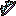
ルーンボウ ビルド/合成弓レベル 45物理/攻撃速度 レベル 40-50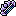
リミットレスボウ 価格確認弓レベル 65物理/攻撃速度¥ 818 レベル 65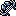
ストームボウ ビルド/合成弓レベル 75物理/攻撃速度 レベル 80+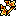
レイディアントボウ ビルド/合成弓レベル 95物理/攻撃速度 レベル 80+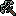
ロングクロスボウ ビルド/合成クロスボウレベル 10物理/攻撃速度 レベル 1-10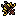
エリートクロスボウ ビルド/合成クロスボウレベル 40物理/攻撃速度 クロスボウタレット最大数 +1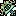
エターナルクロスボウ ビルド/合成クロスボウレベル 90物理/攻撃速度 レベル 80+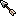
アイアンアロー ビルド/合成矢レベル 5物理/攻撃速度 レベル 1-10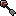
ブルータルアロー ビルド/合成矢レベル 25物理/攻撃速度 レベル 15-30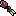
サーペントアロー ビルド/合成矢レベル 35物理/攻撃速度 レベル 40-50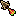
トライバルアロー ビルド/合成矢レベル 45物理/攻撃速度 レベル 40-50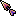
ヘイストアロー ビルド/合成矢レベル 65物理/攻撃速度 レベル 65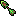
ポイズンアロー ビルド/合成矢レベル 75物理/攻撃速度 レベル 80+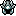
ルーンヘルメット ビルド/合成ヘルメットレベル 40防御/耐久 基本攻撃のクリティカルで矢の雨のクールダウン -0.5秒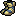
ヘビーブーツ ビルド/合成ブーツレベル 35防御/耐久 ウェーブ間の移動速度がパーティ最遅メンバー基準残す付与素材
装飾・彫刻素材を、付ける部位ごとの効果で整理。武器、防具、アクセのどこに付けると目的の数値が伸びるかを確認。
| 素材 | 種類 | 等級 | 残す理由 | 武器/サブ武器 | 防具/ブーツ | アクセ |
|---|---|---|---|---|---|---|
| スモールエメラルド | 装飾 | コモン | 武器/サブ武器: 攻撃速度 / 防具/ブーツ: ダメージ吸収 / アクセ: 移動速度 | +5~6% 攻撃速度 |
+1% ダメージ吸収 |
+10~15% 移動速度 |
| スモールルビー | 装飾 | コモン | 防具/ブーツ: 耐性 / アクセ: 攻撃力 | +20~30% 火ダメージ |
+5~10% 火耐性 |
+1~2 攻撃力 |
| マイナーアメジスト | 装飾 | コモン | 武器/サブ武器: 物理ダメージ / 防具/ブーツ: 最大体力 / アクセ: クールダウン短縮 | +20~30% 物理ダメージ |
+10~30 最大体力 |
+1~2.5% クールダウン短縮 |
| マイナーサファイア | 装飾 | コモン | 防具/ブーツ: 防御力 / アクセ: クリティカル | +20~30% 冷気ダメージ |
+25~50 防御力 |
+10~15% クリティカル率 |
| マイナートパーズ | 装飾 | コモン | 防具/ブーツ: 防御力 | +20~30% 雷ダメージ |
+10~15% 防御力 |
+8~10% 詠唱速度 |
| ゴブリンの皮 | 彫刻 | コモン | 防具/ブーツ: 耐性 / アクセ: 攻撃速度 | +20~30% 火ダメージ / +20~30% 雷ダメージ |
+5~10% 冷気耐性 / +5~10% 火耐性 |
+4~5% 攻撃速度 / +10~30 最大体力 |
| スケルトンボーン | 彫刻 | コモン | 武器/サブ武器: クリティカル / 防具/ブーツ: 防御力 / アクセ: 攻撃速度 | +15~20% クリティカルダメージ / +20~30% 火ダメージ |
+25~50 防御力 / +10~15% 防御力 |
+1~2 ヒット時体力回復 / +4~5% 攻撃速度 |
| スライムゼリー | 彫刻 | コモン | 武器/サブ武器: 攻撃速度・攻撃力 / 防具/ブーツ: ダメージ吸収 / アクセ: クリティカル | +5~6% 攻撃速度 / +2~3 攻撃力 |
+1% ダメージ吸収 / +2.5~3.5% ブロック率 |
+10~30 最大体力 / +10~15% クリティカル率 |
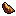 アンバージェム |
装飾 | アンコモン | 武器/サブ武器: クリティカル / 防具/ブーツ: 最大体力 / アクセ: 効果範囲 | +20~25% クリティカルダメージ |
+8~11% 最大体力 |
+8~9% 効果範囲 |
| 翡翠石 | 装飾 | アンコモン | 武器/サブ武器: クリティカル / 防具/ブーツ: 回避率 / アクセ: 攻撃速度 | +20~25% クリティカル率 |
+3.5~4.5% 回避率 |
+5~6% 攻撃速度 |
| 黒曜石の破片 | 装飾 | アンコモン | 武器/サブ武器: 攻撃力 / アクセ: 攻撃力 | +3~6 攻撃力 |
+3.5~4.5% ブロック率 |
+10~15% 攻撃力 |
| ウルフファング | 彫刻 | アンコモン | 武器/サブ武器: クリティカル / 防具/ブーツ: 防御力・耐性 / アクセ: 攻撃力 | +9~10% 効果範囲 / +20~25% クリティカル率 |
+10~15% 雷耐性 / +15~20% 防御力 |
+2~4 ヒット時体力回復 / +2~3 攻撃力 |
| スパイダーシルク | 彫刻 | アンコモン | 武器/サブ武器: 物理ダメージ / 防具/ブーツ: 耐性 / アクセ: クールダウン短縮 | +9~10% 効果範囲 / +30~40% 物理ダメージ |
+10~15% 冷気耐性 / +2.5~4% クールダウン短縮 |
+2.5~4% クールダウン短縮 / +30~60 最大体力 |
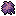 毒草 |
彫刻 | アンコモン | 防具/ブーツ: 防御力・ダメージ吸収 / アクセ: 移動速度・攻撃力 | +2~3% ライフ吸収 / +30~40% 雷ダメージ |
+50~100 防御力 / +1~1.4% ダメージ吸収 |
+2~3 攻撃力 / +15~20% 移動速度 |
| 癒しの薬草 | 彫刻 | アンコモン | 防具/ブーツ: 最大体力・回避率 / アクセ: 攻撃力・クリティカル | +30~40% 火ダメージ / +30~40% 冷気ダメージ |
+3.5~4.5% 回避率 / +8~11% 最大体力 |
+15~20% クリティカル率 / +2~3 攻撃力 |
| アメジスト | 装飾 | レア | 武器/サブ武器: 物理ダメージ / 防具/ブーツ: 最大体力 / アクセ: クールダウン短縮 | +30~40% 物理ダメージ |
+60~90 最大体力 |
+4~5.5% クールダウン短縮 |
| エメラルド | 装飾 | レア | 武器/サブ武器: 攻撃速度 / 防具/ブーツ: 耐性 / アクセ: 移動速度 | +7~9% 攻撃速度 |
+15~20% 混沌耐性 |
+20~25% 移動速度 |
| サファイア | 装飾 | レア | 防具/ブーツ: 耐性 / アクセ: クリティカル | +30~40% 冷気ダメージ |
+15~20% 冷気耐性 |
+20~25% クリティカル率 |
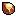 トパーズ |
装飾 | レア | 防具/ブーツ: 耐性 | +30~40% 雷ダメージ |
+15~20% 雷耐性 |
+12~14% 詠唱速度 |
| ルビー | 装飾 | レア | 防具/ブーツ: 耐性 / アクセ: 攻撃力 | +30~40% 火ダメージ |
+15~20% 火耐性 |
+3~6 攻撃力 |
| オーガブラッド | 彫刻 | レア | 武器/サブ武器: 攻撃力 / 防具/ブーツ: 耐性 / アクセ: 攻撃力 | +10~12% 効果範囲 / +20~25% 攻撃力 |
+2~2.5 秒間体力回復 / +15~20% 冷気耐性 |
+60~90 最大体力 / +3~6 攻撃力 |
| キノコの胞子 | 彫刻 | レア | 防具/ブーツ: 耐性 | +5.5~7% クールダウン短縮 / +4~6 ヒット時体力回復 |
+4.5~5.5% ブロック率 / +15~20% 雷耐性 |
+2~2.5 秒間体力回復 / +60~90 最大体力 |
| コウモリの翼膜 | 彫刻 | レア | 防具/ブーツ: 最大体力・ダメージ軽減 / アクセ: クリティカル | +40~50% 雷ダメージ / +40~50% 火ダメージ |
+3~4% ダメージ軽減 / +60~90 最大体力 |
+20~25% クリティカルダメージ / +1~2 ヒット時体力回復 |
| 古代樹の樹液 | 彫刻 | レア | 武器/サブ武器: クリティカル / 防具/ブーツ: ダメージ軽減 / アクセ: 攻撃速度・クリティカル | +25~30% クリティカルダメージ / +10~12% 効果範囲 |
+2~2.5 秒間体力回復 / +3~4% ダメージ軽減 |
+20~25% クリティカルダメージ / +6~7% 攻撃速度 |
| ガーネット | 装飾 | レジェンダリー | 武器/サブ武器: クリティカル / 防具/ブーツ: 防御力 / アクセ: 攻撃速度 | +30~40% クリティカルダメージ |
+25~30% 防御力 |
+7~9% 攻撃速度 |
| クリスタルクォーツ | 装飾 | レジェンダリー | 武器/サブ武器: 攻撃力 / アクセ: クリティカル | +10~15 攻撃力 |
+2.5~3 秒間体力回復 |
+25~30% クリティカルダメージ |
| ターコイズ | 装飾 | レジェンダリー | 武器/サブ武器: クリティカル | +30~35% クリティカル率 |
+5.5~7% クールダウン短縮 |
+90~120 最大体力 |
| 真珠 | 装飾 | レジェンダリー | 防具/ブーツ: ダメージ軽減 / アクセ: クリティカル | +7~8.5% クールダウン短縮 |
+4~5.5% ダメージ軽減 |
+25~30% クリティカル率 |
| スカル | 彫刻 | レジェンダリー | 防具/ブーツ: 耐性 / アクセ: クリティカル | +7~8.5% クールダウン短縮 / +50~60% 雷ダメージ |
+20~25% 雷耐性 / +20~25% 混沌耐性 |
+14~16% 詠唱速度 / +25~30% クリティカルダメージ |
| ナイトシェードエキス | 彫刻 | レジェンダリー | 武器/サブ武器: 攻撃力・クリティカル / 防具/ブーツ: 耐性 / アクセ: クリティカル | +25~30% 攻撃力 / +30~35% クリティカル率 |
+20~25% 雷耐性 / +20~25% 冷気耐性 |
+4~6 ヒット時体力回復 / +25~30% クリティカルダメージ |
| ハーピーの羽 | 彫刻 | レジェンダリー | 武器/サブ武器: 攻撃力 / 防具/ブーツ: ダメージ軽減 / アクセ: 攻撃力 | +50~60% 火ダメージ / +25~30% 攻撃力 |
+5.5~7% ブロック率 / +4~5.5% ダメージ軽減 |
+6~10 攻撃力 / +90~120 最大体力 |
| マンドレイクの根 | 彫刻 | レジェンダリー | 防具/ブーツ: 最大体力・耐性 | +5~7 ヒット時体力回復 / +50~60% 火ダメージ |
+20~25% 冷気耐性 / +90~120 最大体力 |
+2.5~3.5% ライフ吸収 / +2.5~3 秒間体力回復 |
| オパール | 装飾 | イモータル | 武器/サブ武器: 攻撃速度 / 防具/ブーツ: 最大体力 | +11~13% 攻撃速度 |
+17~20% 最大体力 |
+3~4 秒間体力回復 |
| ダイヤモンド | 装飾 | イモータル | 武器/サブ武器: 攻撃力 / 防具/ブーツ: 耐性 / アクセ: 効果範囲 | +15~30 攻撃力 |
+13~15% 全属性耐性 |
+12~14% 効果範囲 |
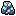 ラピスラズリ |
装飾 | イモータル | 武器/サブ武器: クリティカル / 防具/ブーツ: 回避率 / アクセ: 移動速度 | +35~40% クリティカル率 |
+7~9% 回避率 |
+30~35% 移動速度 |
| ダイス | 彫刻 | イモータル | 武器/サブ武器: 物理ダメージ / 防具/ブーツ: ダメージ吸収 / アクセ: 移動速度・クールダウン短縮 | +60~80% 物理ダメージ / +60~80% 冷気ダメージ |
+2.2~2.6% ダメージ吸収 / +7~9% ブロック率 |
+7~8.5% クールダウン短縮 / +30~35% 移動速度 |
| デーモンブラッド | 彫刻 | イモータル | 防具/ブーツ: 回避率 / アクセ: クリティカル | +14~17% 効果範囲 / +60~80% 雷ダメージ |
+7~9% ブロック率 / +7~9% 回避率 |
+3~4% ライフ吸収 / +30~35% クリティカル率 |
| バジリスクの鱗 | 彫刻 | イモータル | 武器/サブ武器: 攻撃力 / 防具/ブーツ: 最大体力・ダメージ軽減 / アクセ: 移動速度 | +3.5~4.5% ライフ吸収 / +15~30 攻撃力 |
+120~150 最大体力 / +5.5~7% ダメージ軽減 |
+30~35% 移動速度 / +16~20% 詠唱速度 |
| ワイバーンの爪 | 彫刻 | イモータル | 防具/ブーツ: 防御力・耐性 / アクセ: クリティカル | +60~80% 冷気ダメージ / +6~8 ヒット時体力回復 |
+25~30% 冷気耐性 / +200~250 防御力 |
+30~35% クリティカル率 / +3~4 秒間体力回復 |
| アーケインクリスタル | 装飾 | アルカナ | アクセ: クリティカル | +25~30% 詠唱速度 |
+8.5~10% クールダウン短縮 |
+40~50% クリティカルダメージ |
| エンチャントルビー | 装飾 | アルカナ | 防具/ブーツ: 耐性 / アクセ: 攻撃力 | +80~100% 火ダメージ |
+30~35% 火耐性 |
+15~30 攻撃力 |
| ミスティックトパーズ | 装飾 | アルカナ | 防具/ブーツ: 耐性 | +80~100% 雷ダメージ |
+30~35% 雷耐性 |
+20~25% 詠唱速度 |
| 星光のサファイア | 装飾 | アルカナ | 防具/ブーツ: 耐性 / アクセ: クリティカル | +80~100% 冷気ダメージ |
+30~35% 冷気耐性 |
+35~40% クリティカル率 |
| グリフィンのくちばし | 彫刻 | アルカナ | 武器/サブ武器: 攻撃力 / 防具/ブーツ: 最大体力・耐性 / アクセ: クリティカル | +80~100% 冷気ダメージ / +30~50 攻撃力 |
+30~35% 雷耐性 / +20~25% 最大体力 |
+20~25% 詠唱速度 / +40~50% クリティカルダメージ |
| ドラゴンの胆汁 | 彫刻 | アルカナ | 武器/サブ武器: クリティカル / 防具/ブーツ: 回避率 / アクセ: クリティカル | +50~60% クリティカルダメージ / +40~45% クリティカル率 |
+9~11% 回避率 / +9~11% ブロック率 |
+35~40% クリティカル率 / +6~8 ヒット時体力回復 |
| フェニックスの灰 | 彫刻 | アルカナ | 武器/サブ武器: 攻撃力・クリティカル / 防具/ブーツ: ダメージ軽減・ダメージ吸収 / アクセ: 攻撃速度・クリティカル | +40~45% クリティカル率 / +30~50 攻撃力 |
+2.6~3% ダメージ吸収 / +7~8.5% ダメージ軽減 |
+11~13% 攻撃速度 / +40~50% クリティカルダメージ |
| ミノタウロスの角 | 彫刻 | アルカナ | 武器/サブ武器: 攻撃速度 / 防具/ブーツ: 耐性 / アクセ: クールダウン短縮・効果範囲 | +80~100% 冷気ダメージ / +13~15% 攻撃速度 |
+30~35% 雷耐性 / +4~5 秒間体力回復 |
+14~17% 効果範囲 / +8.5~10% クールダウン短縮 |
| アストラルダイヤ | 装飾 | ビヨンド | 武器/サブ武器: 攻撃力 / 防具/ブーツ: 耐性 / アクセ: 効果範囲 | +50~100 攻撃力 |
+17~19% 全属性耐性 |
+17~20% 効果範囲 |
| トワイライトアメジスト | 装飾 | ビヨンド | 武器/サブ武器: 物理ダメージ / 防具/ブーツ: 最大体力 / アクセ: クールダウン短縮 | +100~130% 物理ダメージ |
+180~210 最大体力 |
+8.5~10% クールダウン短縮 |
| ファントムエメラルド | 装飾 | ビヨンド | 武器/サブ武器: 攻撃速度 / 防具/ブーツ: 耐性 / アクセ: 移動速度 | +15~17% 攻撃速度 |
+35~40% 混沌耐性 |
+40~45% 移動速度 |
| 虚空のオパール | 装飾 | ビヨンド | 防具/ブーツ: 最大体力 | +11.5~13% クールダウン短縮 |
+25~30% 最大体力 |
+180~210 最大体力 |
| クラーケンインク | 彫刻 | ビヨンド | 防具/ブーツ: 耐性・回避率 / アクセ: 攻撃力 | +100~130% 冷気ダメージ / +20~23% 効果範囲 |
+35~40% 雷耐性 / +11~13% 回避率 |
+7~9 ヒット時体力回復 / +30~50 攻撃力 |
| タイタンマロウ | 彫刻 | ビヨンド | 武器/サブ武器: 攻撃力 / 防具/ブーツ: 耐性・ダメージ軽減 | +50~70% 攻撃力 / +100~130% 火ダメージ |
+35~40% 雷耐性 / +8.5~10% ダメージ軽減 |
+5~7 秒間体力回復 / +180~210 最大体力 |
| レイスの精髄 | 彫刻 | ビヨンド | 武器/サブ武器: クリティカル / 防具/ブーツ: 最大体力 / アクセ: クリティカル | +60~80% クリティカルダメージ / +100~130% 火ダメージ |
+11~13% ブロック率 / +180~210 最大体力 |
+7~9 ヒット時体力回復 / +50~60% クリティカルダメージ |
| ヴォイドの精髄 | 彫刻 | ビヨンド | 武器/サブ武器: クリティカル / 防具/ブーツ: 耐性・ダメージ軽減 / アクセ: 移動速度・クリティカル | +45~50% クリティカル率 / +8~10 ヒット時体力回復 |
+8.5~10% ダメージ軽減 / +35~40% 冷気耐性 |
+40~45% 移動速度 / +40~45% クリティカル率 |
| セレスティアルパール | 装飾 | セレスティアル | 武器/サブ武器: クリティカル / 防具/ブーツ: ダメージ吸収 / アクセ: クリティカル | +50~55% クリティカル率 |
+4~5% ダメージ吸収 |
+40~45% クリティカル率 |
| ドラゴナイトクリスタル | 装飾 | セレスティアル | 武器/サブ武器: クリティカル / 防具/ブーツ: 防御力 / アクセ: クリティカル | +80~100% クリティカルダメージ |
+45~50% 防御力 |
+60~80% クリティカルダメージ |
| カオススポア | 彫刻 | セレスティアル | 武器/サブ武器: 物理ダメージ・攻撃力 / 防具/ブーツ: 耐性 / アクセ: 移動速度 | +130~180% 物理ダメージ / +100~150 攻撃力 |
+40~45% 冷気耐性 / +40~45% 混沌耐性 |
+45~50% 移動速度 / +7~10 秒間体力回復 |
| 深淵の粘液 | 彫刻 | セレスティアル | 防具/ブーツ: 防御力 / アクセ: 移動速度・攻撃速度 | +130~180% 火ダメージ / +13~14.5% クールダウン短縮 |
+45~50% 防御力 / +13~16% ブロック率 |
+15~17% 攻撃速度 / +45~50% 移動速度 |
| ヴォイドクリスタル | 装飾 | ディバイン | 武器/サブ武器: 攻撃力 / アクセ: 攻撃力 | +100~150% 攻撃力 |
+13~14.5% クールダウン短縮 |
+70~100% 攻撃力 |
| 原初の樹液 | 彫刻 | ディバイン | 防具/ブーツ: 耐性 / アクセ: 移動速度 | +28~35% 効果範囲 / +180~250% 火ダメージ |
+45~50% 混沌耐性 / +10~15 秒間体力回復 |
+35~40% 詠唱速度 / +50~55% 移動速度 |
| 異界の毒 | 彫刻 | ディバイン | 武器/サブ武器: 攻撃速度 / 防具/ブーツ: 防御力 / アクセ: クリティカル・クールダウン短縮 | +10~12 ヒット時体力回復 / +20~25% 攻撃速度 |
+16~20% ブロック率 / +50~55% 防御力 |
+50~55% クリティカル率 / +13~14.5% クールダウン短縮 |
| エーテルジェム | 装飾 | コズミック | 防具/ブーツ: ダメージ軽減 | +1 連続攻撃 +1 |
+14~16% ダメージ軽減 |
+1 基本攻撃回数 -1 |
| 混沌のダイヤモンド | 装飾 | コズミック | 防具/ブーツ: 耐性 / アクセ: クリティカル | +1 投射物数 +1 |
+25~30% 全属性耐性 |
+100~150% クリティカルダメージ |
| チャソダイス | 彫刻 | コズミック | 武器/サブ武器: 攻撃力・クリティカル / 防具/ブーツ: 最大体力・ダメージ吸収 / アクセ: 攻撃力 | +25~30% クリティカル率 / +150~300 攻撃力 |
+270~300 最大体力 / +6~8% ダメージ吸収 |
+40~50% 詠唱速度 / +150~300 攻撃力 |
| ヴォイドの触手 | 彫刻 | コズミック | 武器/サブ武器: 攻撃力・クリティカル / 防具/ブーツ: 耐性 / アクセ: クリティカル | +100~150% 攻撃力 / +100~150% クリティカルダメージ |
+50~55% 火耐性 / +14.5~16% クールダウン短縮 |
+270~300 最大体力 / +55~60% クリティカル率 |
特殊装備
| 装備 | レベル | 必要等級 | 部位 | 効果 |
|---|---|---|---|---|
| コンポジットボウ | 15 | アルカナ | 弓 | 装備スキルの投射物 +1 |
| ダスクボウ | 30 | アルカナ | 弓 | スキュワーショットが出血中の敵へ2倍ダメージ |
| ジェイドボウ | 35 | セレスティアル | 弓 | 装備スキルの連続攻撃 +1 |
| ミスティックボウ | 50 | セレスティアル | 弓 | 基本攻撃のクリティカルで矢の雨のクールダウン -0.5秒 |
| エンシェントボウ | 60 | アルカナ | 弓 | スキュワーショットが出血中の敵へ2倍ダメージ |
| 混沌の弓 | 70 | セレスティアル | 弓 | 基本攻撃のクリティカルで矢の雨のクールダウン -0.5秒 |
| エターナルボウ | 90 | アルカナ | 弓 | スキュワーショットが出血中の敵へ2倍ダメージ |
| エターナルボウ | 90 | セレスティアル | 弓 | 基本攻撃のクリティカルで矢の雨のクールダウン -0.5秒 |
| バーブドアロー | 15 | アルカナ | 矢 | 装備スキルの発動に必要な基本攻撃 -1 |
| バーブドアロー | 15 | アルカナ | 矢 | 装備スキルのクールダウン短縮 |
| チェインヘルム | 20 | アルカナ | ヘルメット | スキュワーショットが出血中の敵へ2倍ダメージ |
| ルーンヘルメット | 40 | セレスティアル | ヘルメット | 基本攻撃のクリティカルで矢の雨のクールダウン -0.5秒 |
| フェイトヘルメット | 50 | アルカナ | ヘルメット | スキュワーショットが出血中の敵へ2倍ダメージ |
| ストームヘルメット | 60 | セレスティアル | ヘルメット | 基本攻撃のクリティカルで矢の雨のクールダウン -0.5秒 |
| 次元のヘルメット | 80 | アルカナ | ヘルメット | スキュワーショットが出血中の敵へ2倍ダメージ |
| 次元のヘルメット | 80 | セレスティアル | ヘルメット | 基本攻撃のクリティカルで矢の雨のクールダウン -0.5秒 |
| ナイトブーツ | 15 | アルカナ | ブーツ | ウェーブ間の移動速度がパーティ最速メンバー基準 |
| ヘビーブーツ | 35 | セレスティアル | ブーツ | ウェーブ間の移動速度がパーティ最遅メンバー基準 |